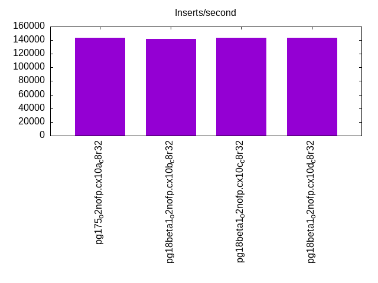
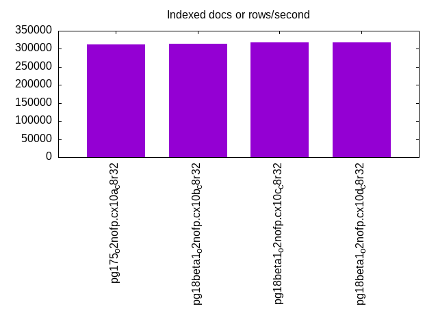
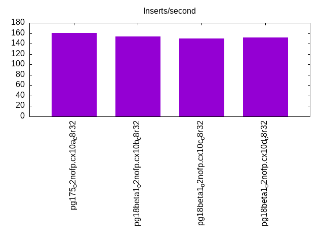
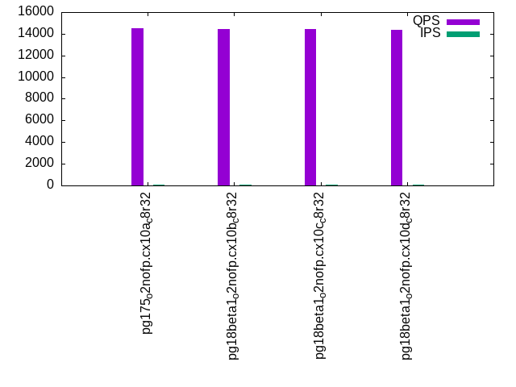
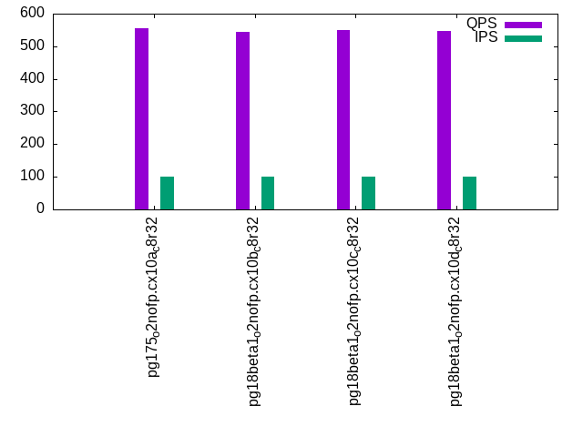
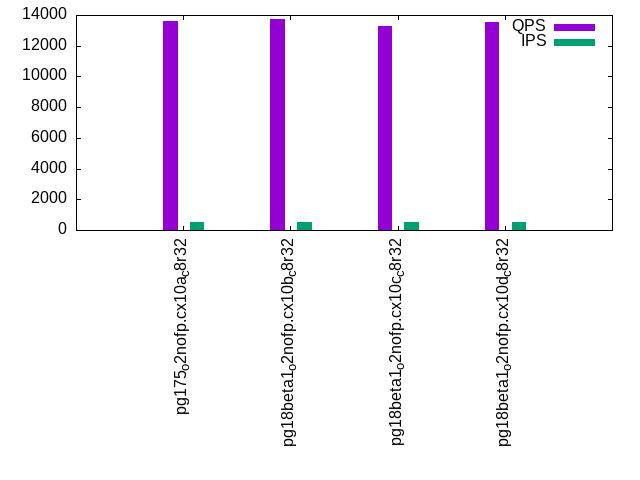
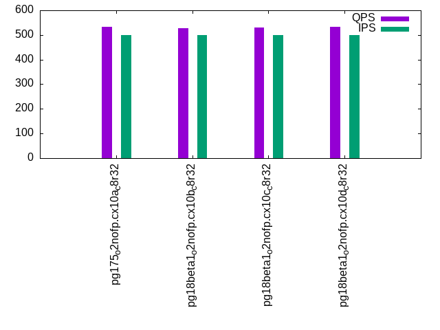
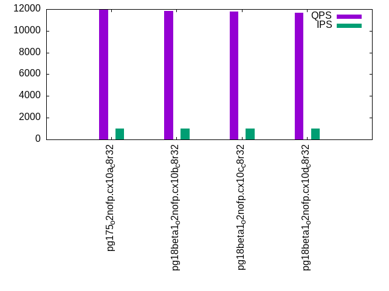
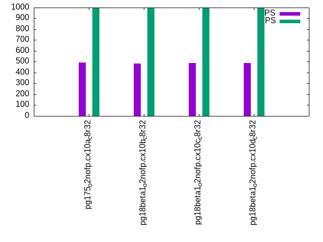

This is a report for the insert benchmark with 800M docs and 1 client(s). It is generated by scripts (bash, awk, sed) and Tufte might not be impressed. An overview of the insert benchmark is here and a short update is here. Below, by DBMS, I mean DBMS+version.config. An example is my8020.c10b40 where my means MySQL, 8020 is version 8.0.20 and c10b40 is the name for the configuration file.
The test server has 8 AMD cores, 32G RAM and an NVMe SSD. It is described here as the PN53. The benchmark was run with 1 client and there were 1 or 3 connections per client (1 for queries or inserts without rate limits, 1+1 for rate limited inserts+deletes). It uses 1 table. It loads 800M rows per table without secondary indexes, creates 3 secondary indexes per table, then inserts 4m+1m rows per table with a delete per insert to avoid growing the table. It then does 6 read+write tests for 1800s each that do queries as fast as possible with 100,100,500,500,1000,1000 inserts/s and the same for deletes/s per client concurrent with the queries. The database is larger than memory. Clients and the DBMS share one server. The per-database configs are in the per-database subdirectories here.
The tested DBMS are:
The numbers are inserts/s for l.i0, l.i1 and l.i2, indexed docs (or rows) /s for l.x and queries/s for qr100, qp100 thru qr1000, qp1000" The values are the average rate over the entire test for inserts (IPS) and queries (QPS). The range of values for IPS and QPS is split into 3 parts: bottom 25%, middle 50%, top 25%. Values in the bottom 25% have a red background, values in the top 25% have a green background and values in the middle have no color. A gray background is used for values that can be ignored because the DBMS did not sustain the target insert rate. Red backgrounds are not used when the minimum value is within 80% of the max value.
| dbms | l.i0 | l.x | l.i1 | l.i2 | qr100 | qp100 | qr500 | qp500 | qr1000 | qp1000 |
|---|---|---|---|---|---|---|---|---|---|---|
| pg175_o2nofp.cx10a_c8r32 | 143292 | 311891 | 3101 | 161 | 14537 | 554 | 13638 | 533 | 11970 | 492 |
| pg18beta1_o2nofp.cx10b_c8r32 | 142096 | 314589 | 3113 | 154 | 14471 | 544 | 13730 | 528 | 11830 | 486 |
| pg18beta1_o2nofp.cx10c_c8r32 | 143781 | 318218 | 3056 | 150 | 14408 | 549 | 13255 | 531 | 11753 | 488 |
| pg18beta1_o2nofp.cx10d_c8r32 | 143369 | 317334 | 3122 | 152 | 14375 | 548 | 13512 | 532 | 11647 | 489 |
This table has relative throughput, throughput for the DBMS relative to the DBMS in the first line, using the absolute throughput from the previous table. Values less than 0.95 have a yellow background. Values greater than 1.05 have a blue background.
| dbms | l.i0 | l.x | l.i1 | l.i2 | qr100 | qp100 | qr500 | qp500 | qr1000 | qp1000 |
|---|---|---|---|---|---|---|---|---|---|---|
| pg175_o2nofp.cx10a_c8r32 | 1.00 | 1.00 | 1.00 | 1.00 | 1.00 | 1.00 | 1.00 | 1.00 | 1.00 | 1.00 |
| pg18beta1_o2nofp.cx10b_c8r32 | 0.99 | 1.01 | 1.00 | 0.96 | 1.00 | 0.98 | 1.01 | 0.99 | 0.99 | 0.99 |
| pg18beta1_o2nofp.cx10c_c8r32 | 1.00 | 1.02 | 0.99 | 0.93 | 0.99 | 0.99 | 0.97 | 1.00 | 0.98 | 0.99 |
| pg18beta1_o2nofp.cx10d_c8r32 | 1.00 | 1.02 | 1.01 | 0.94 | 0.99 | 0.99 | 0.99 | 1.00 | 0.97 | 0.99 |
This lists the average rate of inserts/s for the tests that do inserts concurrent with queries. For such tests the query rate is listed in the table above. The read+write tests are setup so that the insert rate should match the target rate every second. Cells that are not at least 95% of the target have a red background to indicate a failure to satisfy the target.
| dbms | qr100.L1 | qp100.L2 | qr500.L3 | qp500.L4 | qr1000.L5 | qp1000.L6 |
|---|---|---|---|---|---|---|
| pg175_o2nofp.cx10a_c8r32 | 100 | 100 | 500 | 500 | 999 | 999 |
| pg18beta1_o2nofp.cx10b_c8r32 | 100 | 100 | 500 | 500 | 999 | 999 |
| pg18beta1_o2nofp.cx10c_c8r32 | 100 | 100 | 500 | 500 | 999 | 999 |
| pg18beta1_o2nofp.cx10d_c8r32 | 100 | 100 | 500 | 500 | 999 | 999 |
| target | 100 | 100 | 500 | 500 | 1000 | 1000 |
l.i0: load without secondary indexes. Graphs for performance per 1-second interval are here.
Average throughput:
Insert response time histogram: each cell has the percentage of responses that take <= the time in the header and max is the max response time in seconds. For the max column values in the top 25% of the range have a red background and in the bottom 25% of the range have a green background. The red background is not used when the min value is within 80% of the max value.
| dbms | 256us | 1ms | 4ms | 16ms | 64ms | 256ms | 1s | 4s | 16s | gt | max |
|---|---|---|---|---|---|---|---|---|---|---|---|
| pg175_o2nofp.cx10a_c8r32 | 99.970 | 0.024 | 0.004 | 0.002 | 0.054 | ||||||
| pg18beta1_o2nofp.cx10b_c8r32 | 99.872 | 0.118 | 0.010 | 0.001 | 0.048 | ||||||
| pg18beta1_o2nofp.cx10c_c8r32 | 99.968 | 0.026 | 0.005 | 0.001 | 0.046 | ||||||
| pg18beta1_o2nofp.cx10d_c8r32 | 99.967 | 0.026 | 0.006 | 0.001 | 0.046 |
Performance metrics for the DBMS listed above. Some are normalized by throughput, others are not. Legend for results is here.
ips qps rps rmbps wps wmbps rpq rkbpq wpi wkbpi csps cpups cspq cpupq dbgb1 dbgb2 rss maxop p50 p99 tag 143292 0 25 0.2 536.9 59.1 0.000 0.001 0.004 0.422 14293 20.4 0.100 11 76.5 116.6 18.9 0.054 144180 140280 pg175_o2nofp.cx10a_c8r32 142096 0 24 0.2 530.5 58.5 0.000 0.001 0.004 0.421 14382 20.5 0.101 12 76.5 116.6 18.8 0.048 142981 124583 pg18beta1_o2nofp.cx10b_c8r32 143781 0 26 0.2 539.4 59.3 0.000 0.001 0.004 0.422 14449 20.5 0.100 11 76.5 116.6 18.9 0.046 144684 140280 pg18beta1_o2nofp.cx10c_c8r32 143369 0 25 0.2 539.7 59.4 0.000 0.001 0.004 0.424 14383 20.4 0.100 11 76.5 116.6 18.3 0.046 144380 139878 pg18beta1_o2nofp.cx10d_c8r32
l.x: create secondary indexes.
Average throughput:
Performance metrics for the DBMS listed above. Some are normalized by throughput, others are not. Legend for results is here.
ips qps rps rmbps wps wmbps rpq rkbpq wpi wkbpi csps cpups cspq cpupq dbgb1 dbgb2 rss maxop p50 p99 tag 311891 0 845 105.0 989.8 116.4 0.003 0.345 0.003 0.382 423 13.0 0.001 3 153.6 193.7 23.4 0.004 NA NA pg175_o2nofp.cx10a_c8r32 314589 0 852 105.9 997.5 117.2 0.003 0.345 0.003 0.381 426 13.0 0.001 3 153.6 193.7 23.4 0.005 NA NA pg18beta1_o2nofp.cx10b_c8r32 318218 0 862 107.1 994.0 118.5 0.003 0.345 0.003 0.381 1258 13.5 0.004 3 153.6 193.7 23.4 0.005 NA NA pg18beta1_o2nofp.cx10c_c8r32 317334 0 860 106.8 1006.2 118.2 0.003 0.345 0.003 0.381 1010 13.4 0.003 3 153.6 193.7 23.4 0.005 NA NA pg18beta1_o2nofp.cx10d_c8r32
l.i1: continue load after secondary indexes created with 50 inserts per transaction. Graphs for performance per 1-second interval are here.
Average throughput:
Insert response time histogram: each cell has the percentage of responses that take <= the time in the header and max is the max response time in seconds. For the max column values in the top 25% of the range have a red background and in the bottom 25% of the range have a green background. The red background is not used when the min value is within 80% of the max value.
| dbms | 256us | 1ms | 4ms | 16ms | 64ms | 256ms | 1s | 4s | 16s | gt | max |
|---|---|---|---|---|---|---|---|---|---|---|---|
| pg175_o2nofp.cx10a_c8r32 | 98.621 | 1.379 | 0.051 | ||||||||
| pg18beta1_o2nofp.cx10b_c8r32 | 98.572 | 1.427 | 0.058 | ||||||||
| pg18beta1_o2nofp.cx10c_c8r32 | 98.595 | 1.405 | 0.052 | ||||||||
| pg18beta1_o2nofp.cx10d_c8r32 | 98.454 | 1.546 | 0.053 |
Delete response time histogram: each cell has the percentage of responses that take <= the time in the header and max is the max response time in seconds. For the max column values in the top 25% of the range have a red background and in the bottom 25% of the range have a green background. The red background is not used when the min value is within 80% of the max value.
| dbms | 256us | 1ms | 4ms | 16ms | 64ms | 256ms | 1s | 4s | 16s | gt | max |
|---|---|---|---|---|---|---|---|---|---|---|---|
| pg175_o2nofp.cx10a_c8r32 | 0.517 | 15.865 | 41.474 | 42.144 | 0.033 | ||||||
| pg18beta1_o2nofp.cx10b_c8r32 | 0.434 | 15.422 | 41.789 | 42.355 | 0.038 | ||||||
| pg18beta1_o2nofp.cx10c_c8r32 | 0.407 | 15.585 | 41.459 | 42.549 | 0.037 | ||||||
| pg18beta1_o2nofp.cx10d_c8r32 | 0.771 | 15.543 | 40.509 | 43.178 | 0.031 |
Performance metrics for the DBMS listed above. Some are normalized by throughput, others are not. Legend for results is here.
ips qps rps rmbps wps wmbps rpq rkbpq wpi wkbpi csps cpups cspq cpupq dbgb1 dbgb2 rss maxop p50 p99 tag 3101 0 4484 35.5 3687.9 63.0 1.446 11.724 1.189 20.803 10040 14.8 3.238 382 154.3 194.3 22.7 0.051 2499 1800 pg175_o2nofp.cx10a_c8r32 3113 0 4482 35.5 3723.1 63.7 1.440 11.677 1.196 20.949 10086 15.0 3.240 386 154.3 194.3 22.8 0.058 2699 1750 pg18beta1_o2nofp.cx10b_c8r32 3056 0 4395 34.8 3638.7 62.2 1.438 11.659 1.191 20.837 9891 14.9 3.237 390 154.3 194.3 22.8 0.052 2750 1550 pg18beta1_o2nofp.cx10c_c8r32 3122 0 4488 35.5 3706.7 63.2 1.437 11.652 1.187 20.719 10135 14.9 3.246 382 154.3 194.3 23.1 0.053 2750 1800 pg18beta1_o2nofp.cx10d_c8r32
l.i2: continue load after secondary indexes created with 5 inserts per transaction. Graphs for performance per 1-second interval are here.
Average throughput:
Insert response time histogram: each cell has the percentage of responses that take <= the time in the header and max is the max response time in seconds. For the max column values in the top 25% of the range have a red background and in the bottom 25% of the range have a green background. The red background is not used when the min value is within 80% of the max value.
| dbms | 256us | 1ms | 4ms | 16ms | 64ms | 256ms | 1s | 4s | 16s | gt | max |
|---|---|---|---|---|---|---|---|---|---|---|---|
| pg175_o2nofp.cx10a_c8r32 | 10.543 | 89.402 | 0.052 | 0.003 | 0.024 | ||||||
| pg18beta1_o2nofp.cx10b_c8r32 | 10.913 | 89.043 | 0.040 | 0.003 | 0.029 | ||||||
| pg18beta1_o2nofp.cx10c_c8r32 | 10.680 | 89.263 | 0.053 | 0.003 | 0.020 | ||||||
| pg18beta1_o2nofp.cx10d_c8r32 | 10.260 | 89.691 | 0.046 | 0.003 | 0.020 |
Delete response time histogram: each cell has the percentage of responses that take <= the time in the header and max is the max response time in seconds. For the max column values in the top 25% of the range have a red background and in the bottom 25% of the range have a green background. The red background is not used when the min value is within 80% of the max value.
| dbms | 256us | 1ms | 4ms | 16ms | 64ms | 256ms | 1s | 4s | 16s | gt | max |
|---|---|---|---|---|---|---|---|---|---|---|---|
| pg175_o2nofp.cx10a_c8r32 | 99.999 | 0.001 | 0.098 | ||||||||
| pg18beta1_o2nofp.cx10b_c8r32 | 99.999 | 0.001 | 0.108 | ||||||||
| pg18beta1_o2nofp.cx10c_c8r32 | 99.999 | 0.001 | 0.104 | ||||||||
| pg18beta1_o2nofp.cx10d_c8r32 | 99.999 | 0.001 | 0.105 |
Performance metrics for the DBMS listed above. Some are normalized by throughput, others are not. Legend for results is here.
ips qps rps rmbps wps wmbps rpq rkbpq wpi wkbpi csps cpups cspq cpupq dbgb1 dbgb2 rss maxop p50 p99 tag 161 0 173 1.4 477.5 6.6 1.072 8.770 2.958 42.056 1109 12.7 6.872 6295 154.4 194.5 23.4 0.024 160 125 pg175_o2nofp.cx10a_c8r32 154 0 165 1.3 448.5 6.3 1.074 8.789 2.918 41.840 1058 12.7 6.882 6610 154.5 191.5 23.3 0.029 155 120 pg18beta1_o2nofp.cx10b_c8r32 150 0 161 1.3 440.9 6.2 1.072 8.762 2.930 42.203 1047 12.7 6.954 6751 154.5 191.5 23.4 0.020 150 135 pg18beta1_o2nofp.cx10c_c8r32 152 0 163 1.3 443.6 6.2 1.072 8.767 2.924 41.936 1047 12.7 6.902 6697 154.5 191.6 23.4 0.020 150 120 pg18beta1_o2nofp.cx10d_c8r32
qr100.L1: range queries with 100 insert/s per client. Graphs for performance per 1-second interval are here.
Average throughput:
Query response time histogram: each cell has the percentage of responses that take <= the time in the header and max is the max response time in seconds. For max values in the top 25% of the range have a red background and in the bottom 25% of the range have a green background. The red background is not used when the min value is within 80% of the max value.
| dbms | 256us | 1ms | 4ms | 16ms | 64ms | 256ms | 1s | 4s | 16s | gt | max |
|---|---|---|---|---|---|---|---|---|---|---|---|
| pg175_o2nofp.cx10a_c8r32 | 99.997 | 0.003 | nonzero | nonzero | 0.010 | ||||||
| pg18beta1_o2nofp.cx10b_c8r32 | 99.996 | 0.004 | nonzero | nonzero | 0.010 | ||||||
| pg18beta1_o2nofp.cx10c_c8r32 | 99.996 | 0.003 | nonzero | nonzero | 0.009 | ||||||
| pg18beta1_o2nofp.cx10d_c8r32 | 99.996 | 0.003 | nonzero | nonzero | 0.011 |
Insert response time histogram: each cell has the percentage of responses that take <= the time in the header and max is the max response time in seconds. For max values in the top 25% of the range have a red background and in the bottom 25% of the range have a green background. The red background is not used when the min value is within 80% of the max value.
| dbms | 256us | 1ms | 4ms | 16ms | 64ms | 256ms | 1s | 4s | 16s | gt | max |
|---|---|---|---|---|---|---|---|---|---|---|---|
| pg175_o2nofp.cx10a_c8r32 | 59.694 | 40.306 | 0.026 | ||||||||
| pg18beta1_o2nofp.cx10b_c8r32 | 60.139 | 39.861 | 0.026 | ||||||||
| pg18beta1_o2nofp.cx10c_c8r32 | 59.861 | 40.139 | 0.027 | ||||||||
| pg18beta1_o2nofp.cx10d_c8r32 | 60.306 | 39.694 | 0.025 |
Delete response time histogram: each cell has the percentage of responses that take <= the time in the header and max is the max response time in seconds. For max values in the top 25% of the range have a red background and in the bottom 25% of the range have a green background. The red background is not used when the min value is within 80% of the max value.
| dbms | 256us | 1ms | 4ms | 16ms | 64ms | 256ms | 1s | 4s | 16s | gt | max |
|---|---|---|---|---|---|---|---|---|---|---|---|
| pg175_o2nofp.cx10a_c8r32 | 39.444 | 60.500 | 0.056 | 0.010 | |||||||
| pg18beta1_o2nofp.cx10b_c8r32 | 42.528 | 57.417 | 0.056 | 0.010 | |||||||
| pg18beta1_o2nofp.cx10c_c8r32 | 40.889 | 59.056 | 0.056 | 0.010 | |||||||
| pg18beta1_o2nofp.cx10d_c8r32 | 42.056 | 57.889 | 0.056 | 0.010 |
Performance metrics for the DBMS listed above. Some are normalized by throughput, others are not. Legend for results is here.
ips qps rps rmbps wps wmbps rpq rkbpq wpi wkbpi csps cpups cspq cpupq dbgb1 dbgb2 rss maxop p50 p99 tag 100 14537 112 0.9 61.8 1.9 0.008 0.065 0.618 18.992 55729 12.5 3.833 69 154.5 193.7 23.4 0.010 14510 14254 pg175_o2nofp.cx10a_c8r32 100 14471 112 0.9 65.1 1.9 0.008 0.064 0.652 19.293 55511 12.6 3.836 70 154.5 189.9 23.3 0.010 14493 14190 pg18beta1_o2nofp.cx10b_c8r32 100 14408 112 0.9 66.7 1.9 0.008 0.064 0.667 19.398 55238 12.6 3.834 70 154.5 191.3 23.4 0.009 14398 14142 pg18beta1_o2nofp.cx10c_c8r32 100 14375 111 0.9 66.4 1.9 0.008 0.065 0.665 19.412 55145 12.6 3.836 70 154.5 190.1 23.4 0.011 14398 14078 pg18beta1_o2nofp.cx10d_c8r32
qp100.L2: point queries with 100 insert/s per client. Graphs for performance per 1-second interval are here.
Average throughput:
Query response time histogram: each cell has the percentage of responses that take <= the time in the header and max is the max response time in seconds. For max values in the top 25% of the range have a red background and in the bottom 25% of the range have a green background. The red background is not used when the min value is within 80% of the max value.
| dbms | 256us | 1ms | 4ms | 16ms | 64ms | 256ms | 1s | 4s | 16s | gt | max |
|---|---|---|---|---|---|---|---|---|---|---|---|
| pg175_o2nofp.cx10a_c8r32 | 0.820 | 99.169 | 0.010 | 0.007 | |||||||
| pg18beta1_o2nofp.cx10b_c8r32 | 0.736 | 99.252 | 0.012 | 0.014 | |||||||
| pg18beta1_o2nofp.cx10c_c8r32 | 0.782 | 99.209 | 0.010 | 0.007 | |||||||
| pg18beta1_o2nofp.cx10d_c8r32 | 0.752 | 99.238 | 0.010 | 0.015 |
Insert response time histogram: each cell has the percentage of responses that take <= the time in the header and max is the max response time in seconds. For max values in the top 25% of the range have a red background and in the bottom 25% of the range have a green background. The red background is not used when the min value is within 80% of the max value.
| dbms | 256us | 1ms | 4ms | 16ms | 64ms | 256ms | 1s | 4s | 16s | gt | max |
|---|---|---|---|---|---|---|---|---|---|---|---|
| pg175_o2nofp.cx10a_c8r32 | 99.528 | 0.472 | 0.019 | ||||||||
| pg18beta1_o2nofp.cx10b_c8r32 | 99.278 | 0.722 | 0.025 | ||||||||
| pg18beta1_o2nofp.cx10c_c8r32 | 99.472 | 0.528 | 0.020 | ||||||||
| pg18beta1_o2nofp.cx10d_c8r32 | 99.361 | 0.639 | 0.024 |
Delete response time histogram: each cell has the percentage of responses that take <= the time in the header and max is the max response time in seconds. For max values in the top 25% of the range have a red background and in the bottom 25% of the range have a green background. The red background is not used when the min value is within 80% of the max value.
| dbms | 256us | 1ms | 4ms | 16ms | 64ms | 256ms | 1s | 4s | 16s | gt | max |
|---|---|---|---|---|---|---|---|---|---|---|---|
| pg175_o2nofp.cx10a_c8r32 | 99.972 | 0.028 | 0.009 | ||||||||
| pg18beta1_o2nofp.cx10b_c8r32 | 98.583 | 1.417 | 0.009 | ||||||||
| pg18beta1_o2nofp.cx10c_c8r32 | 99.944 | 0.056 | 0.009 | ||||||||
| pg18beta1_o2nofp.cx10d_c8r32 | 99.944 | 0.056 | 0.009 |
Performance metrics for the DBMS listed above. Some are normalized by throughput, others are not. Legend for results is here.
ips qps rps rmbps wps wmbps rpq rkbpq wpi wkbpi csps cpups cspq cpupq dbgb1 dbgb2 rss maxop p50 p99 tag 100 554 7196 56.6 349.0 4.1 12.998 104.655 3.490 41.801 16000 3.5 28.902 506 154.5 193.7 23.4 0.007 576 368 pg175_o2nofp.cx10a_c8r32 100 544 7113 55.9 345.9 4.1 13.087 105.406 3.463 41.606 15805 3.6 29.079 530 154.5 189.9 23.3 0.014 576 352 pg18beta1_o2nofp.cx10b_c8r32 100 549 7138 56.1 344.1 4.0 13.002 104.667 3.441 41.414 15871 3.6 28.908 525 154.5 191.3 23.4 0.007 576 368 pg18beta1_o2nofp.cx10c_c8r32 100 548 7132 56.1 345.1 4.1 13.012 104.772 3.454 41.534 15861 3.6 28.939 525 154.5 190.1 23.4 0.015 576 368 pg18beta1_o2nofp.cx10d_c8r32
qr500.L3: range queries with 500 insert/s per client. Graphs for performance per 1-second interval are here.
Average throughput:
Query response time histogram: each cell has the percentage of responses that take <= the time in the header and max is the max response time in seconds. For max values in the top 25% of the range have a red background and in the bottom 25% of the range have a green background. The red background is not used when the min value is within 80% of the max value.
| dbms | 256us | 1ms | 4ms | 16ms | 64ms | 256ms | 1s | 4s | 16s | gt | max |
|---|---|---|---|---|---|---|---|---|---|---|---|
| pg175_o2nofp.cx10a_c8r32 | 99.982 | 0.018 | nonzero | nonzero | nonzero | 0.028 | |||||
| pg18beta1_o2nofp.cx10b_c8r32 | 99.984 | 0.016 | nonzero | nonzero | nonzero | 0.018 | |||||
| pg18beta1_o2nofp.cx10c_c8r32 | 99.982 | 0.017 | nonzero | nonzero | nonzero | 0.031 | |||||
| pg18beta1_o2nofp.cx10d_c8r32 | 99.983 | 0.017 | nonzero | nonzero | nonzero | 0.028 |
Insert response time histogram: each cell has the percentage of responses that take <= the time in the header and max is the max response time in seconds. For max values in the top 25% of the range have a red background and in the bottom 25% of the range have a green background. The red background is not used when the min value is within 80% of the max value.
| dbms | 256us | 1ms | 4ms | 16ms | 64ms | 256ms | 1s | 4s | 16s | gt | max |
|---|---|---|---|---|---|---|---|---|---|---|---|
| pg175_o2nofp.cx10a_c8r32 | 93.156 | 6.844 | 0.025 | ||||||||
| pg18beta1_o2nofp.cx10b_c8r32 | 93.417 | 6.583 | 0.030 | ||||||||
| pg18beta1_o2nofp.cx10c_c8r32 | 93.733 | 6.267 | 0.030 | ||||||||
| pg18beta1_o2nofp.cx10d_c8r32 | 93.633 | 6.367 | 0.029 |
Delete response time histogram: each cell has the percentage of responses that take <= the time in the header and max is the max response time in seconds. For max values in the top 25% of the range have a red background and in the bottom 25% of the range have a green background. The red background is not used when the min value is within 80% of the max value.
| dbms | 256us | 1ms | 4ms | 16ms | 64ms | 256ms | 1s | 4s | 16s | gt | max |
|---|---|---|---|---|---|---|---|---|---|---|---|
| pg175_o2nofp.cx10a_c8r32 | 36.561 | 63.439 | 0.015 | ||||||||
| pg18beta1_o2nofp.cx10b_c8r32 | 36.100 | 63.894 | 0.006 | 0.016 | |||||||
| pg18beta1_o2nofp.cx10c_c8r32 | 36.222 | 63.778 | 0.016 | ||||||||
| pg18beta1_o2nofp.cx10d_c8r32 | 30.744 | 69.256 | 0.016 |
Performance metrics for the DBMS listed above. Some are normalized by throughput, others are not. Legend for results is here.
ips qps rps rmbps wps wmbps rpq rkbpq wpi wkbpi csps cpups cspq cpupq dbgb1 dbgb2 rss maxop p50 p99 tag 500 13638 870 6.9 338.0 9.2 0.064 0.521 0.676 18.909 53925 13.8 3.954 81 154.6 191.3 23.4 0.028 13662 13086 pg175_o2nofp.cx10a_c8r32 500 13730 868 6.9 351.2 9.4 0.063 0.516 0.703 19.163 54275 13.7 3.953 80 154.6 190.0 23.3 0.018 13758 13230 pg18beta1_o2nofp.cx10b_c8r32 500 13255 869 6.9 353.6 9.4 0.066 0.536 0.708 19.238 52466 13.8 3.958 83 154.6 190.2 23.4 0.031 13262 12798 pg18beta1_o2nofp.cx10c_c8r32 500 13512 868 6.9 352.5 9.4 0.064 0.525 0.705 19.209 53452 13.8 3.956 82 154.6 190.0 23.4 0.028 13534 13022 pg18beta1_o2nofp.cx10d_c8r32
qp500.L4: point queries with 500 insert/s per client. Graphs for performance per 1-second interval are here.
Average throughput:
Query response time histogram: each cell has the percentage of responses that take <= the time in the header and max is the max response time in seconds. For max values in the top 25% of the range have a red background and in the bottom 25% of the range have a green background. The red background is not used when the min value is within 80% of the max value.
| dbms | 256us | 1ms | 4ms | 16ms | 64ms | 256ms | 1s | 4s | 16s | gt | max |
|---|---|---|---|---|---|---|---|---|---|---|---|
| pg175_o2nofp.cx10a_c8r32 | 0.427 | 99.564 | 0.009 | 0.007 | |||||||
| pg18beta1_o2nofp.cx10b_c8r32 | 0.386 | 99.605 | 0.009 | 0.009 | |||||||
| pg18beta1_o2nofp.cx10c_c8r32 | 0.411 | 99.579 | 0.010 | 0.008 | |||||||
| pg18beta1_o2nofp.cx10d_c8r32 | 0.408 | 99.583 | 0.009 | 0.010 |
Insert response time histogram: each cell has the percentage of responses that take <= the time in the header and max is the max response time in seconds. For max values in the top 25% of the range have a red background and in the bottom 25% of the range have a green background. The red background is not used when the min value is within 80% of the max value.
| dbms | 256us | 1ms | 4ms | 16ms | 64ms | 256ms | 1s | 4s | 16s | gt | max |
|---|---|---|---|---|---|---|---|---|---|---|---|
| pg175_o2nofp.cx10a_c8r32 | 99.767 | 0.233 | 0.021 | ||||||||
| pg18beta1_o2nofp.cx10b_c8r32 | 99.739 | 0.261 | 0.020 | ||||||||
| pg18beta1_o2nofp.cx10c_c8r32 | 99.722 | 0.278 | 0.022 | ||||||||
| pg18beta1_o2nofp.cx10d_c8r32 | 99.728 | 0.272 | 0.020 |
Delete response time histogram: each cell has the percentage of responses that take <= the time in the header and max is the max response time in seconds. For max values in the top 25% of the range have a red background and in the bottom 25% of the range have a green background. The red background is not used when the min value is within 80% of the max value.
| dbms | 256us | 1ms | 4ms | 16ms | 64ms | 256ms | 1s | 4s | 16s | gt | max |
|---|---|---|---|---|---|---|---|---|---|---|---|
| pg175_o2nofp.cx10a_c8r32 | 91.678 | 8.322 | 0.042 | ||||||||
| pg18beta1_o2nofp.cx10b_c8r32 | 91.083 | 8.917 | 0.044 | ||||||||
| pg18beta1_o2nofp.cx10c_c8r32 | 89.611 | 10.389 | 0.043 | ||||||||
| pg18beta1_o2nofp.cx10d_c8r32 | 91.361 | 8.639 | 0.044 |
Performance metrics for the DBMS listed above. Some are normalized by throughput, others are not. Legend for results is here.
ips qps rps rmbps wps wmbps rpq rkbpq wpi wkbpi csps cpups cspq cpupq dbgb1 dbgb2 rss maxop p50 p99 tag 500 533 7852 61.6 1557.4 18.3 14.737 118.428 3.117 37.497 17327 5.2 32.521 781 154.6 189.0 23.4 0.007 544 432 pg175_o2nofp.cx10a_c8r32 500 528 7824 61.4 1544.6 18.2 14.822 119.133 3.089 37.264 17254 5.3 32.684 803 154.6 188.3 23.3 0.009 544 416 pg18beta1_o2nofp.cx10b_c8r32 500 531 7831 61.5 1544.2 18.2 14.742 118.460 3.090 37.277 17283 5.3 32.536 798 154.6 188.5 23.4 0.008 544 432 pg18beta1_o2nofp.cx10c_c8r32 500 532 7846 61.6 1545.2 18.2 14.737 118.423 3.092 37.287 17314 5.3 32.521 796 154.6 188.3 23.4 0.010 544 432 pg18beta1_o2nofp.cx10d_c8r32
qr1000.L5: range queries with 1000 insert/s per client. Graphs for performance per 1-second interval are here.
Average throughput:
Query response time histogram: each cell has the percentage of responses that take <= the time in the header and max is the max response time in seconds. For max values in the top 25% of the range have a red background and in the bottom 25% of the range have a green background. The red background is not used when the min value is within 80% of the max value.
| dbms | 256us | 1ms | 4ms | 16ms | 64ms | 256ms | 1s | 4s | 16s | gt | max |
|---|---|---|---|---|---|---|---|---|---|---|---|
| pg175_o2nofp.cx10a_c8r32 | 99.953 | 0.044 | 0.003 | 0.001 | nonzero | nonzero | 0.085 | ||||
| pg18beta1_o2nofp.cx10b_c8r32 | 99.950 | 0.046 | 0.003 | 0.001 | nonzero | nonzero | 0.093 | ||||
| pg18beta1_o2nofp.cx10c_c8r32 | 99.949 | 0.047 | 0.003 | 0.001 | nonzero | nonzero | 0.095 | ||||
| pg18beta1_o2nofp.cx10d_c8r32 | 99.949 | 0.047 | 0.003 | 0.001 | nonzero | nonzero | 0.099 |
Insert response time histogram: each cell has the percentage of responses that take <= the time in the header and max is the max response time in seconds. For max values in the top 25% of the range have a red background and in the bottom 25% of the range have a green background. The red background is not used when the min value is within 80% of the max value.
| dbms | 256us | 1ms | 4ms | 16ms | 64ms | 256ms | 1s | 4s | 16s | gt | max |
|---|---|---|---|---|---|---|---|---|---|---|---|
| pg175_o2nofp.cx10a_c8r32 | 96.836 | 3.164 | 0.023 | ||||||||
| pg18beta1_o2nofp.cx10b_c8r32 | 97.181 | 2.819 | 0.027 | ||||||||
| pg18beta1_o2nofp.cx10c_c8r32 | 97.033 | 2.967 | 0.027 | ||||||||
| pg18beta1_o2nofp.cx10d_c8r32 | 96.750 | 3.250 | 0.022 |
Delete response time histogram: each cell has the percentage of responses that take <= the time in the header and max is the max response time in seconds. For max values in the top 25% of the range have a red background and in the bottom 25% of the range have a green background. The red background is not used when the min value is within 80% of the max value.
| dbms | 256us | 1ms | 4ms | 16ms | 64ms | 256ms | 1s | 4s | 16s | gt | max |
|---|---|---|---|---|---|---|---|---|---|---|---|
| pg175_o2nofp.cx10a_c8r32 | 6.611 | 93.389 | 0.062 | ||||||||
| pg18beta1_o2nofp.cx10b_c8r32 | 1.133 | 98.864 | 0.003 | 0.066 | |||||||
| pg18beta1_o2nofp.cx10c_c8r32 | 5.194 | 94.803 | 0.003 | 0.065 | |||||||
| pg18beta1_o2nofp.cx10d_c8r32 | 8.083 | 91.914 | 0.003 | 0.066 |
Performance metrics for the DBMS listed above. Some are normalized by throughput, others are not. Legend for results is here.
ips qps rps rmbps wps wmbps rpq rkbpq wpi wkbpi csps cpups cspq cpupq dbgb1 dbgb2 rss maxop p50 p99 tag 999 11970 1488 11.9 944.4 19.1 0.124 1.022 0.945 19.599 48975 19.3 4.092 129 154.8 188.1 23.4 0.085 11982 11199 pg175_o2nofp.cx10a_c8r32 999 11830 1488 12.0 950.2 19.2 0.126 1.035 0.951 19.675 48444 19.6 4.095 133 154.8 187.5 23.3 0.093 11838 11086 pg18beta1_o2nofp.cx10b_c8r32 999 11753 1490 12.0 950.5 19.2 0.127 1.042 0.952 19.717 48177 19.4 4.099 132 154.8 187.6 23.4 0.095 11758 10990 pg18beta1_o2nofp.cx10c_c8r32 999 11647 1489 12.0 949.4 19.2 0.128 1.051 0.950 19.692 47764 19.3 4.101 133 154.8 187.5 23.4 0.099 11647 10830 pg18beta1_o2nofp.cx10d_c8r32
qp1000.L6: point queries with 1000 insert/s per client. Graphs for performance per 1-second interval are here.
Average throughput:
Query response time histogram: each cell has the percentage of responses that take <= the time in the header and max is the max response time in seconds. For max values in the top 25% of the range have a red background and in the bottom 25% of the range have a green background. The red background is not used when the min value is within 80% of the max value.
| dbms | 256us | 1ms | 4ms | 16ms | 64ms | 256ms | 1s | 4s | 16s | gt | max |
|---|---|---|---|---|---|---|---|---|---|---|---|
| pg175_o2nofp.cx10a_c8r32 | 0.186 | 98.941 | 0.871 | 0.003 | 0.041 | ||||||
| pg18beta1_o2nofp.cx10b_c8r32 | 0.149 | 98.997 | 0.852 | 0.002 | 0.039 | ||||||
| pg18beta1_o2nofp.cx10c_c8r32 | 0.168 | 98.907 | 0.923 | 0.002 | 0.043 | ||||||
| pg18beta1_o2nofp.cx10d_c8r32 | 0.165 | 98.908 | 0.924 | 0.003 | 0.040 |
Insert response time histogram: each cell has the percentage of responses that take <= the time in the header and max is the max response time in seconds. For max values in the top 25% of the range have a red background and in the bottom 25% of the range have a green background. The red background is not used when the min value is within 80% of the max value.
| dbms | 256us | 1ms | 4ms | 16ms | 64ms | 256ms | 1s | 4s | 16s | gt | max |
|---|---|---|---|---|---|---|---|---|---|---|---|
| pg175_o2nofp.cx10a_c8r32 | 98.508 | 1.492 | 0.051 | ||||||||
| pg18beta1_o2nofp.cx10b_c8r32 | 98.536 | 1.464 | 0.057 | ||||||||
| pg18beta1_o2nofp.cx10c_c8r32 | 98.353 | 1.647 | 0.045 | ||||||||
| pg18beta1_o2nofp.cx10d_c8r32 | 98.328 | 1.672 | 0.052 |
Delete response time histogram: each cell has the percentage of responses that take <= the time in the header and max is the max response time in seconds. For max values in the top 25% of the range have a red background and in the bottom 25% of the range have a green background. The red background is not used when the min value is within 80% of the max value.
| dbms | 256us | 1ms | 4ms | 16ms | 64ms | 256ms | 1s | 4s | 16s | gt | max |
|---|---|---|---|---|---|---|---|---|---|---|---|
| pg175_o2nofp.cx10a_c8r32 | 99.997 | 0.003 | 0.099 | ||||||||
| pg18beta1_o2nofp.cx10b_c8r32 | 99.997 | 0.003 | 0.108 | ||||||||
| pg18beta1_o2nofp.cx10c_c8r32 | 99.997 | 0.003 | 0.103 | ||||||||
| pg18beta1_o2nofp.cx10d_c8r32 | 99.997 | 0.003 | 0.105 |
Performance metrics for the DBMS listed above. Some are normalized by throughput, others are not. Legend for results is here.
ips qps rps rmbps wps wmbps rpq rkbpq wpi wkbpi csps cpups cspq cpupq dbgb1 dbgb2 rss maxop p50 p99 tag 999 492 8519 66.8 2721.4 33.7 17.319 139.132 2.723 34.544 18706 13.7 38.027 2228 155.0 191.2 23.4 0.041 512 368 pg175_o2nofp.cx10a_c8r32 999 486 8477 66.5 2717.7 33.9 17.445 140.169 2.719 34.698 18590 14.0 38.260 2305 155.0 190.9 23.3 0.039 496 368 pg18beta1_o2nofp.cx10b_c8r32 999 488 8474 66.5 2720.4 33.7 17.351 139.385 2.722 34.549 18600 13.8 38.083 2260 155.0 190.7 23.4 0.043 496 368 pg18beta1_o2nofp.cx10c_c8r32 999 489 8478 66.5 2720.7 33.8 17.344 139.343 2.722 34.646 18615 13.9 38.083 2275 155.0 190.7 23.4 0.040 496 368 pg18beta1_o2nofp.cx10d_c8r32
l.i0: load without secondary indexes
Performance metrics for all DBMS, not just the ones listed above. Some are normalized by throughput, others are not. Legend for results is here.
ips qps rps rmbps wps wmbps rpq rkbpq wpi wkbpi csps cpups cspq cpupq dbgb1 dbgb2 rss maxop p50 p99 tag 143292 0 25 0.2 536.9 59.1 0.000 0.001 0.004 0.422 14293 20.4 0.100 11 76.5 116.6 18.9 0.054 144180 140280 pg175_o2nofp.cx10a_c8r32 142096 0 24 0.2 530.5 58.5 0.000 0.001 0.004 0.421 14382 20.5 0.101 12 76.5 116.6 18.8 0.048 142981 124583 pg18beta1_o2nofp.cx10b_c8r32 143781 0 26 0.2 539.4 59.3 0.000 0.001 0.004 0.422 14449 20.5 0.100 11 76.5 116.6 18.9 0.046 144684 140280 pg18beta1_o2nofp.cx10c_c8r32 143369 0 25 0.2 539.7 59.4 0.000 0.001 0.004 0.424 14383 20.4 0.100 11 76.5 116.6 18.3 0.046 144380 139878 pg18beta1_o2nofp.cx10d_c8r32
l.x: create secondary indexes
Performance metrics for all DBMS, not just the ones listed above. Some are normalized by throughput, others are not. Legend for results is here.
ips qps rps rmbps wps wmbps rpq rkbpq wpi wkbpi csps cpups cspq cpupq dbgb1 dbgb2 rss maxop p50 p99 tag 311891 0 845 105.0 989.8 116.4 0.003 0.345 0.003 0.382 423 13.0 0.001 3 153.6 193.7 23.4 0.004 NA NA pg175_o2nofp.cx10a_c8r32 314589 0 852 105.9 997.5 117.2 0.003 0.345 0.003 0.381 426 13.0 0.001 3 153.6 193.7 23.4 0.005 NA NA pg18beta1_o2nofp.cx10b_c8r32 318218 0 862 107.1 994.0 118.5 0.003 0.345 0.003 0.381 1258 13.5 0.004 3 153.6 193.7 23.4 0.005 NA NA pg18beta1_o2nofp.cx10c_c8r32 317334 0 860 106.8 1006.2 118.2 0.003 0.345 0.003 0.381 1010 13.4 0.003 3 153.6 193.7 23.4 0.005 NA NA pg18beta1_o2nofp.cx10d_c8r32
l.i1: continue load after secondary indexes created with 50 inserts per transaction
Performance metrics for all DBMS, not just the ones listed above. Some are normalized by throughput, others are not. Legend for results is here.
ips qps rps rmbps wps wmbps rpq rkbpq wpi wkbpi csps cpups cspq cpupq dbgb1 dbgb2 rss maxop p50 p99 tag 3101 0 4484 35.5 3687.9 63.0 1.446 11.724 1.189 20.803 10040 14.8 3.238 382 154.3 194.3 22.7 0.051 2499 1800 pg175_o2nofp.cx10a_c8r32 3113 0 4482 35.5 3723.1 63.7 1.440 11.677 1.196 20.949 10086 15.0 3.240 386 154.3 194.3 22.8 0.058 2699 1750 pg18beta1_o2nofp.cx10b_c8r32 3056 0 4395 34.8 3638.7 62.2 1.438 11.659 1.191 20.837 9891 14.9 3.237 390 154.3 194.3 22.8 0.052 2750 1550 pg18beta1_o2nofp.cx10c_c8r32 3122 0 4488 35.5 3706.7 63.2 1.437 11.652 1.187 20.719 10135 14.9 3.246 382 154.3 194.3 23.1 0.053 2750 1800 pg18beta1_o2nofp.cx10d_c8r32
l.i2: continue load after secondary indexes created with 5 inserts per transaction
Performance metrics for all DBMS, not just the ones listed above. Some are normalized by throughput, others are not. Legend for results is here.
ips qps rps rmbps wps wmbps rpq rkbpq wpi wkbpi csps cpups cspq cpupq dbgb1 dbgb2 rss maxop p50 p99 tag 161 0 173 1.4 477.5 6.6 1.072 8.770 2.958 42.056 1109 12.7 6.872 6295 154.4 194.5 23.4 0.024 160 125 pg175_o2nofp.cx10a_c8r32 154 0 165 1.3 448.5 6.3 1.074 8.789 2.918 41.840 1058 12.7 6.882 6610 154.5 191.5 23.3 0.029 155 120 pg18beta1_o2nofp.cx10b_c8r32 150 0 161 1.3 440.9 6.2 1.072 8.762 2.930 42.203 1047 12.7 6.954 6751 154.5 191.5 23.4 0.020 150 135 pg18beta1_o2nofp.cx10c_c8r32 152 0 163 1.3 443.6 6.2 1.072 8.767 2.924 41.936 1047 12.7 6.902 6697 154.5 191.6 23.4 0.020 150 120 pg18beta1_o2nofp.cx10d_c8r32
qr100.L1: range queries with 100 insert/s per client
Performance metrics for all DBMS, not just the ones listed above. Some are normalized by throughput, others are not. Legend for results is here.
ips qps rps rmbps wps wmbps rpq rkbpq wpi wkbpi csps cpups cspq cpupq dbgb1 dbgb2 rss maxop p50 p99 tag 100 14537 112 0.9 61.8 1.9 0.008 0.065 0.618 18.992 55729 12.5 3.833 69 154.5 193.7 23.4 0.010 14510 14254 pg175_o2nofp.cx10a_c8r32 100 14471 112 0.9 65.1 1.9 0.008 0.064 0.652 19.293 55511 12.6 3.836 70 154.5 189.9 23.3 0.010 14493 14190 pg18beta1_o2nofp.cx10b_c8r32 100 14408 112 0.9 66.7 1.9 0.008 0.064 0.667 19.398 55238 12.6 3.834 70 154.5 191.3 23.4 0.009 14398 14142 pg18beta1_o2nofp.cx10c_c8r32 100 14375 111 0.9 66.4 1.9 0.008 0.065 0.665 19.412 55145 12.6 3.836 70 154.5 190.1 23.4 0.011 14398 14078 pg18beta1_o2nofp.cx10d_c8r32
qp100.L2: point queries with 100 insert/s per client
Performance metrics for all DBMS, not just the ones listed above. Some are normalized by throughput, others are not. Legend for results is here.
ips qps rps rmbps wps wmbps rpq rkbpq wpi wkbpi csps cpups cspq cpupq dbgb1 dbgb2 rss maxop p50 p99 tag 100 554 7196 56.6 349.0 4.1 12.998 104.655 3.490 41.801 16000 3.5 28.902 506 154.5 193.7 23.4 0.007 576 368 pg175_o2nofp.cx10a_c8r32 100 544 7113 55.9 345.9 4.1 13.087 105.406 3.463 41.606 15805 3.6 29.079 530 154.5 189.9 23.3 0.014 576 352 pg18beta1_o2nofp.cx10b_c8r32 100 549 7138 56.1 344.1 4.0 13.002 104.667 3.441 41.414 15871 3.6 28.908 525 154.5 191.3 23.4 0.007 576 368 pg18beta1_o2nofp.cx10c_c8r32 100 548 7132 56.1 345.1 4.1 13.012 104.772 3.454 41.534 15861 3.6 28.939 525 154.5 190.1 23.4 0.015 576 368 pg18beta1_o2nofp.cx10d_c8r32
qr500.L3: range queries with 500 insert/s per client
Performance metrics for all DBMS, not just the ones listed above. Some are normalized by throughput, others are not. Legend for results is here.
ips qps rps rmbps wps wmbps rpq rkbpq wpi wkbpi csps cpups cspq cpupq dbgb1 dbgb2 rss maxop p50 p99 tag 500 13638 870 6.9 338.0 9.2 0.064 0.521 0.676 18.909 53925 13.8 3.954 81 154.6 191.3 23.4 0.028 13662 13086 pg175_o2nofp.cx10a_c8r32 500 13730 868 6.9 351.2 9.4 0.063 0.516 0.703 19.163 54275 13.7 3.953 80 154.6 190.0 23.3 0.018 13758 13230 pg18beta1_o2nofp.cx10b_c8r32 500 13255 869 6.9 353.6 9.4 0.066 0.536 0.708 19.238 52466 13.8 3.958 83 154.6 190.2 23.4 0.031 13262 12798 pg18beta1_o2nofp.cx10c_c8r32 500 13512 868 6.9 352.5 9.4 0.064 0.525 0.705 19.209 53452 13.8 3.956 82 154.6 190.0 23.4 0.028 13534 13022 pg18beta1_o2nofp.cx10d_c8r32
qp500.L4: point queries with 500 insert/s per client
Performance metrics for all DBMS, not just the ones listed above. Some are normalized by throughput, others are not. Legend for results is here.
ips qps rps rmbps wps wmbps rpq rkbpq wpi wkbpi csps cpups cspq cpupq dbgb1 dbgb2 rss maxop p50 p99 tag 500 533 7852 61.6 1557.4 18.3 14.737 118.428 3.117 37.497 17327 5.2 32.521 781 154.6 189.0 23.4 0.007 544 432 pg175_o2nofp.cx10a_c8r32 500 528 7824 61.4 1544.6 18.2 14.822 119.133 3.089 37.264 17254 5.3 32.684 803 154.6 188.3 23.3 0.009 544 416 pg18beta1_o2nofp.cx10b_c8r32 500 531 7831 61.5 1544.2 18.2 14.742 118.460 3.090 37.277 17283 5.3 32.536 798 154.6 188.5 23.4 0.008 544 432 pg18beta1_o2nofp.cx10c_c8r32 500 532 7846 61.6 1545.2 18.2 14.737 118.423 3.092 37.287 17314 5.3 32.521 796 154.6 188.3 23.4 0.010 544 432 pg18beta1_o2nofp.cx10d_c8r32
qr1000.L5: range queries with 1000 insert/s per client
Performance metrics for all DBMS, not just the ones listed above. Some are normalized by throughput, others are not. Legend for results is here.
ips qps rps rmbps wps wmbps rpq rkbpq wpi wkbpi csps cpups cspq cpupq dbgb1 dbgb2 rss maxop p50 p99 tag 999 11970 1488 11.9 944.4 19.1 0.124 1.022 0.945 19.599 48975 19.3 4.092 129 154.8 188.1 23.4 0.085 11982 11199 pg175_o2nofp.cx10a_c8r32 999 11830 1488 12.0 950.2 19.2 0.126 1.035 0.951 19.675 48444 19.6 4.095 133 154.8 187.5 23.3 0.093 11838 11086 pg18beta1_o2nofp.cx10b_c8r32 999 11753 1490 12.0 950.5 19.2 0.127 1.042 0.952 19.717 48177 19.4 4.099 132 154.8 187.6 23.4 0.095 11758 10990 pg18beta1_o2nofp.cx10c_c8r32 999 11647 1489 12.0 949.4 19.2 0.128 1.051 0.950 19.692 47764 19.3 4.101 133 154.8 187.5 23.4 0.099 11647 10830 pg18beta1_o2nofp.cx10d_c8r32
qp1000.L6: point queries with 1000 insert/s per client
Performance metrics for all DBMS, not just the ones listed above. Some are normalized by throughput, others are not. Legend for results is here.
ips qps rps rmbps wps wmbps rpq rkbpq wpi wkbpi csps cpups cspq cpupq dbgb1 dbgb2 rss maxop p50 p99 tag 999 492 8519 66.8 2721.4 33.7 17.319 139.132 2.723 34.544 18706 13.7 38.027 2228 155.0 191.2 23.4 0.041 512 368 pg175_o2nofp.cx10a_c8r32 999 486 8477 66.5 2717.7 33.9 17.445 140.169 2.719 34.698 18590 14.0 38.260 2305 155.0 190.9 23.3 0.039 496 368 pg18beta1_o2nofp.cx10b_c8r32 999 488 8474 66.5 2720.4 33.7 17.351 139.385 2.722 34.549 18600 13.8 38.083 2260 155.0 190.7 23.4 0.043 496 368 pg18beta1_o2nofp.cx10c_c8r32 999 489 8478 66.5 2720.7 33.8 17.344 139.343 2.722 34.646 18615 13.9 38.083 2275 155.0 190.7 23.4 0.040 496 368 pg18beta1_o2nofp.cx10d_c8r32
Insert response time histogram
256us 1ms 4ms 16ms 64ms 256ms 1s 4s 16s gt max tag 0.000 99.970 0.024 0.004 0.002 0.000 0.000 0.000 0.000 0.000 0.054 pg175_o2nofp.cx10a_c8r32 0.000 99.872 0.118 0.010 0.001 0.000 0.000 0.000 0.000 0.000 0.048 pg18beta1_o2nofp.cx10b_c8r32 0.000 99.968 0.026 0.005 0.001 0.000 0.000 0.000 0.000 0.000 0.046 pg18beta1_o2nofp.cx10c_c8r32 0.000 99.967 0.026 0.006 0.001 0.000 0.000 0.000 0.000 0.000 0.046 pg18beta1_o2nofp.cx10d_c8r32
TODO - determine whether there is data for create index response time
Insert response time histogram
256us 1ms 4ms 16ms 64ms 256ms 1s 4s 16s gt max tag 0.000 0.000 0.000 98.621 1.379 0.000 0.000 0.000 0.000 0.000 0.051 pg175_o2nofp.cx10a_c8r32 0.000 0.000 0.000 98.572 1.427 0.000 0.000 0.000 0.000 0.000 0.058 pg18beta1_o2nofp.cx10b_c8r32 0.000 0.000 0.000 98.595 1.405 0.000 0.000 0.000 0.000 0.000 0.052 pg18beta1_o2nofp.cx10c_c8r32 0.000 0.000 0.000 98.454 1.546 0.000 0.000 0.000 0.000 0.000 0.053 pg18beta1_o2nofp.cx10d_c8r32
Delete response time histogram
256us 1ms 4ms 16ms 64ms 256ms 1s 4s 16s gt max tag 0.000 0.517 15.865 41.474 42.144 0.000 0.000 0.000 0.000 0.000 0.033 pg175_o2nofp.cx10a_c8r32 0.000 0.434 15.422 41.789 42.355 0.000 0.000 0.000 0.000 0.000 0.038 pg18beta1_o2nofp.cx10b_c8r32 0.000 0.407 15.585 41.459 42.549 0.000 0.000 0.000 0.000 0.000 0.037 pg18beta1_o2nofp.cx10c_c8r32 0.000 0.771 15.543 40.509 43.178 0.000 0.000 0.000 0.000 0.000 0.031 pg18beta1_o2nofp.cx10d_c8r32
Insert response time histogram
256us 1ms 4ms 16ms 64ms 256ms 1s 4s 16s gt max tag 0.000 10.543 89.402 0.052 0.003 0.000 0.000 0.000 0.000 0.000 0.024 pg175_o2nofp.cx10a_c8r32 0.000 10.913 89.043 0.040 0.003 0.000 0.000 0.000 0.000 0.000 0.029 pg18beta1_o2nofp.cx10b_c8r32 0.000 10.680 89.263 0.053 0.003 0.000 0.000 0.000 0.000 0.000 0.020 pg18beta1_o2nofp.cx10c_c8r32 0.000 10.260 89.691 0.046 0.003 0.000 0.000 0.000 0.000 0.000 0.020 pg18beta1_o2nofp.cx10d_c8r32
Delete response time histogram
256us 1ms 4ms 16ms 64ms 256ms 1s 4s 16s gt max tag 0.000 0.000 0.000 0.000 99.999 0.001 0.000 0.000 0.000 0.000 0.098 pg175_o2nofp.cx10a_c8r32 0.000 0.000 0.000 0.000 99.999 0.001 0.000 0.000 0.000 0.000 0.108 pg18beta1_o2nofp.cx10b_c8r32 0.000 0.000 0.000 0.000 99.999 0.001 0.000 0.000 0.000 0.000 0.104 pg18beta1_o2nofp.cx10c_c8r32 0.000 0.000 0.000 0.000 99.999 0.001 0.000 0.000 0.000 0.000 0.105 pg18beta1_o2nofp.cx10d_c8r32
Query response time histogram
256us 1ms 4ms 16ms 64ms 256ms 1s 4s 16s gt max tag 99.997 0.003 nonzero nonzero 0.000 0.000 0.000 0.000 0.000 0.000 0.010 pg175_o2nofp.cx10a_c8r32 99.996 0.004 nonzero nonzero 0.000 0.000 0.000 0.000 0.000 0.000 0.010 pg18beta1_o2nofp.cx10b_c8r32 99.996 0.003 nonzero nonzero 0.000 0.000 0.000 0.000 0.000 0.000 0.009 pg18beta1_o2nofp.cx10c_c8r32 99.996 0.003 nonzero nonzero 0.000 0.000 0.000 0.000 0.000 0.000 0.011 pg18beta1_o2nofp.cx10d_c8r32
Insert response time histogram
256us 1ms 4ms 16ms 64ms 256ms 1s 4s 16s gt max tag 0.000 0.000 0.000 59.694 40.306 0.000 0.000 0.000 0.000 0.000 0.026 pg175_o2nofp.cx10a_c8r32 0.000 0.000 0.000 60.139 39.861 0.000 0.000 0.000 0.000 0.000 0.026 pg18beta1_o2nofp.cx10b_c8r32 0.000 0.000 0.000 59.861 40.139 0.000 0.000 0.000 0.000 0.000 0.027 pg18beta1_o2nofp.cx10c_c8r32 0.000 0.000 0.000 60.306 39.694 0.000 0.000 0.000 0.000 0.000 0.025 pg18beta1_o2nofp.cx10d_c8r32
Delete response time histogram
256us 1ms 4ms 16ms 64ms 256ms 1s 4s 16s gt max tag 0.000 39.444 60.500 0.056 0.000 0.000 0.000 0.000 0.000 0.000 0.010 pg175_o2nofp.cx10a_c8r32 0.000 42.528 57.417 0.056 0.000 0.000 0.000 0.000 0.000 0.000 0.010 pg18beta1_o2nofp.cx10b_c8r32 0.000 40.889 59.056 0.056 0.000 0.000 0.000 0.000 0.000 0.000 0.010 pg18beta1_o2nofp.cx10c_c8r32 0.000 42.056 57.889 0.056 0.000 0.000 0.000 0.000 0.000 0.000 0.010 pg18beta1_o2nofp.cx10d_c8r32
Query response time histogram
256us 1ms 4ms 16ms 64ms 256ms 1s 4s 16s gt max tag 0.000 0.820 99.169 0.010 0.000 0.000 0.000 0.000 0.000 0.000 0.007 pg175_o2nofp.cx10a_c8r32 0.000 0.736 99.252 0.012 0.000 0.000 0.000 0.000 0.000 0.000 0.014 pg18beta1_o2nofp.cx10b_c8r32 0.000 0.782 99.209 0.010 0.000 0.000 0.000 0.000 0.000 0.000 0.007 pg18beta1_o2nofp.cx10c_c8r32 0.000 0.752 99.238 0.010 0.000 0.000 0.000 0.000 0.000 0.000 0.015 pg18beta1_o2nofp.cx10d_c8r32
Insert response time histogram
256us 1ms 4ms 16ms 64ms 256ms 1s 4s 16s gt max tag 0.000 0.000 0.000 99.528 0.472 0.000 0.000 0.000 0.000 0.000 0.019 pg175_o2nofp.cx10a_c8r32 0.000 0.000 0.000 99.278 0.722 0.000 0.000 0.000 0.000 0.000 0.025 pg18beta1_o2nofp.cx10b_c8r32 0.000 0.000 0.000 99.472 0.528 0.000 0.000 0.000 0.000 0.000 0.020 pg18beta1_o2nofp.cx10c_c8r32 0.000 0.000 0.000 99.361 0.639 0.000 0.000 0.000 0.000 0.000 0.024 pg18beta1_o2nofp.cx10d_c8r32
Delete response time histogram
256us 1ms 4ms 16ms 64ms 256ms 1s 4s 16s gt max tag 0.000 0.000 99.972 0.028 0.000 0.000 0.000 0.000 0.000 0.000 0.009 pg175_o2nofp.cx10a_c8r32 0.000 0.000 98.583 1.417 0.000 0.000 0.000 0.000 0.000 0.000 0.009 pg18beta1_o2nofp.cx10b_c8r32 0.000 0.000 99.944 0.056 0.000 0.000 0.000 0.000 0.000 0.000 0.009 pg18beta1_o2nofp.cx10c_c8r32 0.000 0.000 99.944 0.056 0.000 0.000 0.000 0.000 0.000 0.000 0.009 pg18beta1_o2nofp.cx10d_c8r32
Query response time histogram
256us 1ms 4ms 16ms 64ms 256ms 1s 4s 16s gt max tag 99.982 0.018 nonzero nonzero nonzero 0.000 0.000 0.000 0.000 0.000 0.028 pg175_o2nofp.cx10a_c8r32 99.984 0.016 nonzero nonzero nonzero 0.000 0.000 0.000 0.000 0.000 0.018 pg18beta1_o2nofp.cx10b_c8r32 99.982 0.017 nonzero nonzero nonzero 0.000 0.000 0.000 0.000 0.000 0.031 pg18beta1_o2nofp.cx10c_c8r32 99.983 0.017 nonzero nonzero nonzero 0.000 0.000 0.000 0.000 0.000 0.028 pg18beta1_o2nofp.cx10d_c8r32
Insert response time histogram
256us 1ms 4ms 16ms 64ms 256ms 1s 4s 16s gt max tag 0.000 0.000 0.000 93.156 6.844 0.000 0.000 0.000 0.000 0.000 0.025 pg175_o2nofp.cx10a_c8r32 0.000 0.000 0.000 93.417 6.583 0.000 0.000 0.000 0.000 0.000 0.030 pg18beta1_o2nofp.cx10b_c8r32 0.000 0.000 0.000 93.733 6.267 0.000 0.000 0.000 0.000 0.000 0.030 pg18beta1_o2nofp.cx10c_c8r32 0.000 0.000 0.000 93.633 6.367 0.000 0.000 0.000 0.000 0.000 0.029 pg18beta1_o2nofp.cx10d_c8r32
Delete response time histogram
256us 1ms 4ms 16ms 64ms 256ms 1s 4s 16s gt max tag 0.000 0.000 36.561 63.439 0.000 0.000 0.000 0.000 0.000 0.000 0.015 pg175_o2nofp.cx10a_c8r32 0.000 0.000 36.100 63.894 0.006 0.000 0.000 0.000 0.000 0.000 0.016 pg18beta1_o2nofp.cx10b_c8r32 0.000 0.000 36.222 63.778 0.000 0.000 0.000 0.000 0.000 0.000 0.016 pg18beta1_o2nofp.cx10c_c8r32 0.000 0.000 30.744 69.256 0.000 0.000 0.000 0.000 0.000 0.000 0.016 pg18beta1_o2nofp.cx10d_c8r32
Query response time histogram
256us 1ms 4ms 16ms 64ms 256ms 1s 4s 16s gt max tag 0.000 0.427 99.564 0.009 0.000 0.000 0.000 0.000 0.000 0.000 0.007 pg175_o2nofp.cx10a_c8r32 0.000 0.386 99.605 0.009 0.000 0.000 0.000 0.000 0.000 0.000 0.009 pg18beta1_o2nofp.cx10b_c8r32 0.000 0.411 99.579 0.010 0.000 0.000 0.000 0.000 0.000 0.000 0.008 pg18beta1_o2nofp.cx10c_c8r32 0.000 0.408 99.583 0.009 0.000 0.000 0.000 0.000 0.000 0.000 0.010 pg18beta1_o2nofp.cx10d_c8r32
Insert response time histogram
256us 1ms 4ms 16ms 64ms 256ms 1s 4s 16s gt max tag 0.000 0.000 0.000 99.767 0.233 0.000 0.000 0.000 0.000 0.000 0.021 pg175_o2nofp.cx10a_c8r32 0.000 0.000 0.000 99.739 0.261 0.000 0.000 0.000 0.000 0.000 0.020 pg18beta1_o2nofp.cx10b_c8r32 0.000 0.000 0.000 99.722 0.278 0.000 0.000 0.000 0.000 0.000 0.022 pg18beta1_o2nofp.cx10c_c8r32 0.000 0.000 0.000 99.728 0.272 0.000 0.000 0.000 0.000 0.000 0.020 pg18beta1_o2nofp.cx10d_c8r32
Delete response time histogram
256us 1ms 4ms 16ms 64ms 256ms 1s 4s 16s gt max tag 0.000 0.000 0.000 91.678 8.322 0.000 0.000 0.000 0.000 0.000 0.042 pg175_o2nofp.cx10a_c8r32 0.000 0.000 0.000 91.083 8.917 0.000 0.000 0.000 0.000 0.000 0.044 pg18beta1_o2nofp.cx10b_c8r32 0.000 0.000 0.000 89.611 10.389 0.000 0.000 0.000 0.000 0.000 0.043 pg18beta1_o2nofp.cx10c_c8r32 0.000 0.000 0.000 91.361 8.639 0.000 0.000 0.000 0.000 0.000 0.044 pg18beta1_o2nofp.cx10d_c8r32
Query response time histogram
256us 1ms 4ms 16ms 64ms 256ms 1s 4s 16s gt max tag 99.953 0.044 0.003 0.001 nonzero nonzero 0.000 0.000 0.000 0.000 0.085 pg175_o2nofp.cx10a_c8r32 99.950 0.046 0.003 0.001 nonzero nonzero 0.000 0.000 0.000 0.000 0.093 pg18beta1_o2nofp.cx10b_c8r32 99.949 0.047 0.003 0.001 nonzero nonzero 0.000 0.000 0.000 0.000 0.095 pg18beta1_o2nofp.cx10c_c8r32 99.949 0.047 0.003 0.001 nonzero nonzero 0.000 0.000 0.000 0.000 0.099 pg18beta1_o2nofp.cx10d_c8r32
Insert response time histogram
256us 1ms 4ms 16ms 64ms 256ms 1s 4s 16s gt max tag 0.000 0.000 0.000 96.836 3.164 0.000 0.000 0.000 0.000 0.000 0.023 pg175_o2nofp.cx10a_c8r32 0.000 0.000 0.000 97.181 2.819 0.000 0.000 0.000 0.000 0.000 0.027 pg18beta1_o2nofp.cx10b_c8r32 0.000 0.000 0.000 97.033 2.967 0.000 0.000 0.000 0.000 0.000 0.027 pg18beta1_o2nofp.cx10c_c8r32 0.000 0.000 0.000 96.750 3.250 0.000 0.000 0.000 0.000 0.000 0.022 pg18beta1_o2nofp.cx10d_c8r32
Delete response time histogram
256us 1ms 4ms 16ms 64ms 256ms 1s 4s 16s gt max tag 0.000 0.000 0.000 6.611 93.389 0.000 0.000 0.000 0.000 0.000 0.062 pg175_o2nofp.cx10a_c8r32 0.000 0.000 0.000 1.133 98.864 0.003 0.000 0.000 0.000 0.000 0.066 pg18beta1_o2nofp.cx10b_c8r32 0.000 0.000 0.000 5.194 94.803 0.003 0.000 0.000 0.000 0.000 0.065 pg18beta1_o2nofp.cx10c_c8r32 0.000 0.000 0.000 8.083 91.914 0.003 0.000 0.000 0.000 0.000 0.066 pg18beta1_o2nofp.cx10d_c8r32
Query response time histogram
256us 1ms 4ms 16ms 64ms 256ms 1s 4s 16s gt max tag 0.000 0.186 98.941 0.871 0.003 0.000 0.000 0.000 0.000 0.000 0.041 pg175_o2nofp.cx10a_c8r32 0.000 0.149 98.997 0.852 0.002 0.000 0.000 0.000 0.000 0.000 0.039 pg18beta1_o2nofp.cx10b_c8r32 0.000 0.168 98.907 0.923 0.002 0.000 0.000 0.000 0.000 0.000 0.043 pg18beta1_o2nofp.cx10c_c8r32 0.000 0.165 98.908 0.924 0.003 0.000 0.000 0.000 0.000 0.000 0.040 pg18beta1_o2nofp.cx10d_c8r32
Insert response time histogram
256us 1ms 4ms 16ms 64ms 256ms 1s 4s 16s gt max tag 0.000 0.000 0.000 98.508 1.492 0.000 0.000 0.000 0.000 0.000 0.051 pg175_o2nofp.cx10a_c8r32 0.000 0.000 0.000 98.536 1.464 0.000 0.000 0.000 0.000 0.000 0.057 pg18beta1_o2nofp.cx10b_c8r32 0.000 0.000 0.000 98.353 1.647 0.000 0.000 0.000 0.000 0.000 0.045 pg18beta1_o2nofp.cx10c_c8r32 0.000 0.000 0.000 98.328 1.672 0.000 0.000 0.000 0.000 0.000 0.052 pg18beta1_o2nofp.cx10d_c8r32
Delete response time histogram
256us 1ms 4ms 16ms 64ms 256ms 1s 4s 16s gt max tag 0.000 0.000 0.000 0.000 99.997 0.003 0.000 0.000 0.000 0.000 0.099 pg175_o2nofp.cx10a_c8r32 0.000 0.000 0.000 0.000 99.997 0.003 0.000 0.000 0.000 0.000 0.108 pg18beta1_o2nofp.cx10b_c8r32 0.000 0.000 0.000 0.000 99.997 0.003 0.000 0.000 0.000 0.000 0.103 pg18beta1_o2nofp.cx10c_c8r32 0.000 0.000 0.000 0.000 99.997 0.003 0.000 0.000 0.000 0.000 0.105 pg18beta1_o2nofp.cx10d_c8r32